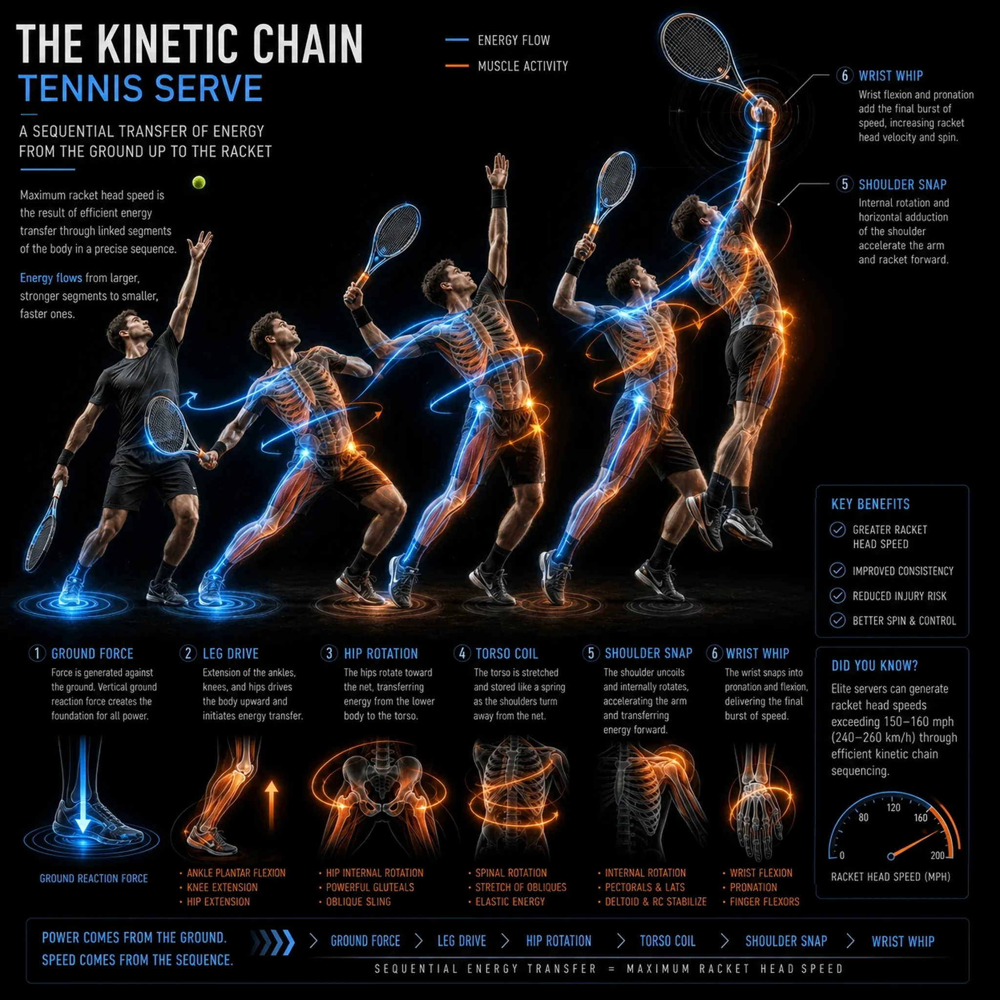
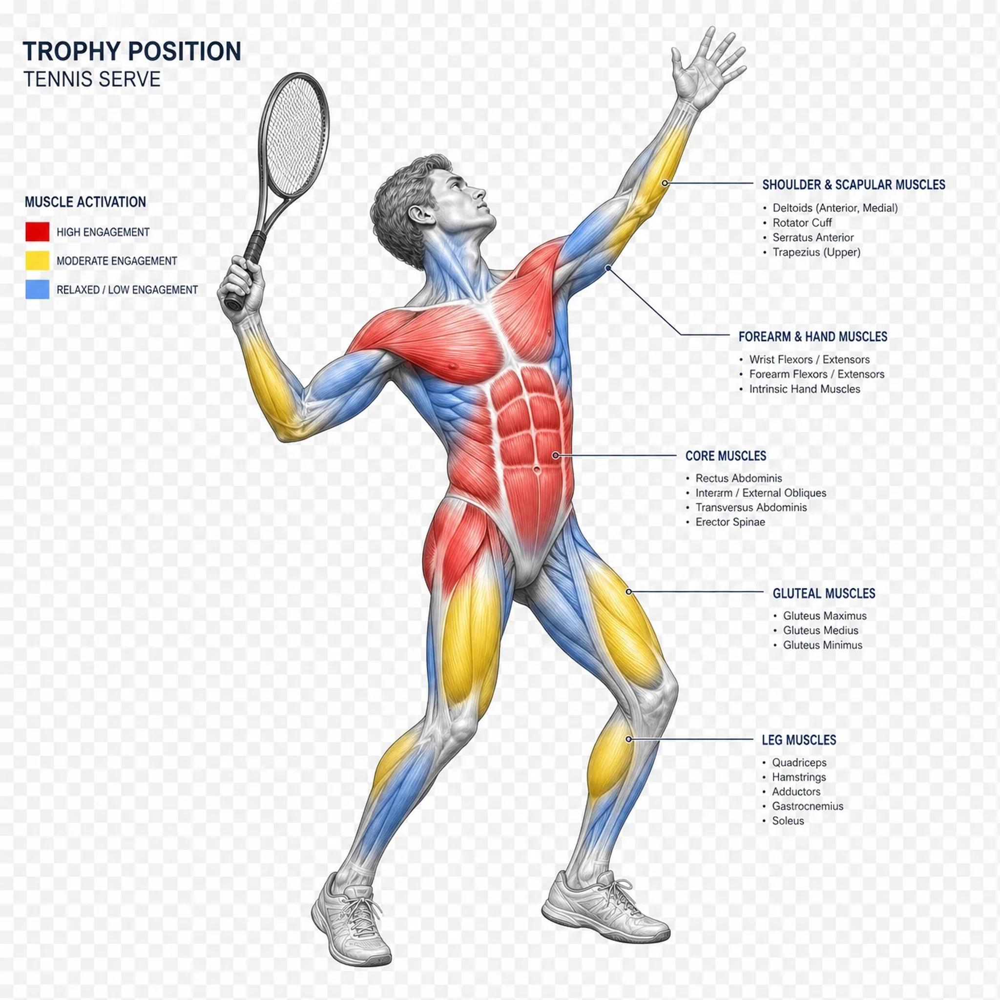
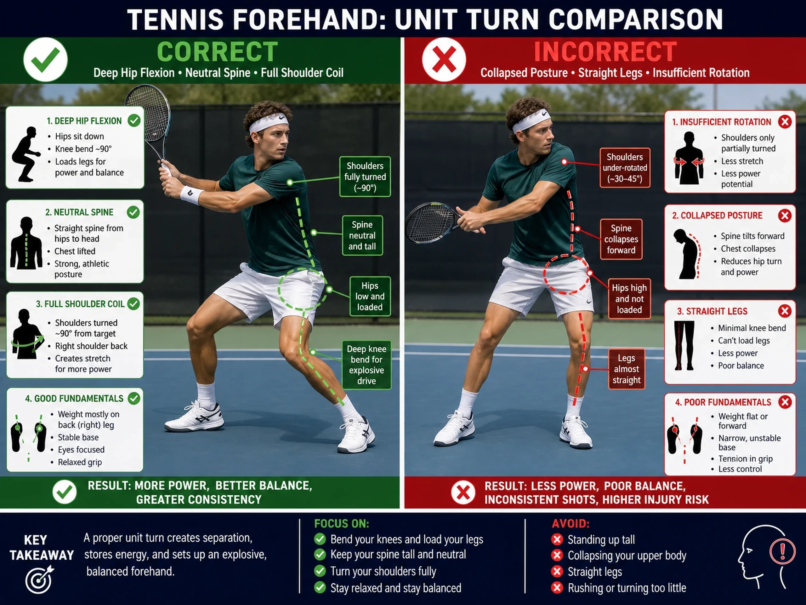

The Contact Point Architecture FrameworkKhung Kiến Trúc Điểm Tiếp Xúc
Understanding the two primary determinants of clean, effective contactHiểu hai yếu tố chính xác định tiếp xúc sạch, hiệu quả
● Grip → Racket Face AngleCách Cầm Vợt → Góc Mặt Vợt
The foundation that cannot be overridden mid-swingNền tảng không thể bị ghi đè giữa swing
The grip establishes the resting relationship between palm/wrist and string bed. This determines the natural face angle at contact and the wrist freedom available during the stroke.Cách cầm vợt thiết lập mối quan hệ tự nhiên giữa lòng bàn tay/cổ tay và mặt dây. Điều này xác định góc mặt tự nhiên tại tiếp xúc và tự do cổ tay có sẵn trong suốt cú đánh.
Key GripsCác Cách Cầm Chính:
- Continental: Perpendicular / slight openVuông góc / hơi mở
- Eastern Forehand: Slightly closedHơi đóng
- Semi-Western: Moderately closedĐóng vừa phải
- Western: Strongly closedĐóng nhiều
● Arm/Body Configuration → Racket PositionCấu Hình Cánh Tay/Cơ Thể → Vị Trí Vợt
The scaffolding that places the arm in spaceGiàn giáo đặt cánh tay trong không gian
Body configuration governs three spatial parameters simultaneously: height (where in strike zone), distance (extension vs compression), and depth (where in swing arc).Cấu hình cơ thể điều chỉnh ba thông số không gian cùng một lúc: chiều cao (nơi trong vùng đánh), khoảng cách (kéo dài vs nén), và độ sâu (nơi trong cung swing).
Hierarchy
Stance → Hip/Shoulder Rotation → Elbow → Wrist → Racket HeadTư Thế → Xoay Hông/Vai → Khuỷu Tay → Cổ Tay → Đầu Vợt
Five Analytical LensesNăm Lăng Kính Phân Tích
A systematic approach to analyzing any tennis strokeCách tiếp cận có hệ thống để phân tích bất kỳ cú đánh tennis nào
Lens 1: Contact Point GeometryLăng Kính 1: Hình Học Điểm Tiếp Xúc
Define the target contact zone for the stroke being analyzed by specifying height relative to body, distance from body, and position relative to front foot.Đừng đi loanh quanh — mỗi cú đánh có MỘT điểm tiếp xúc lý tưởng. Xác định nó bằng 3 yếu tố: chiều cao so với cơ thể, khoảng cách từ người, và vị trí so với chân trước. Khi bạn thấy cú đánh hỏng, hãy trace ngược từ contact point — 90% lỗi bắt đầu từ đây.
Key Parameters3 Thông Số Phải Biết
- Height:Chiều cao: Below knee / knee / hip / waist / shoulder / above shoulderDưới gối / gối / hông / eo / vai / trên vai
- Distance:Khoảng cách: Compressed / neutral / extendedCo / trung tính / duỗi
- Position:Vị trí: Behind / inline / in front of front footSau chân / ngang chân / trước chân trước
This is the diagnostic anchor. When a stroke breaks down, map backward from a geometry failure at contact.Đây là mỏ neo chẩn đoán. Cú đánh hỏng ở đâu, bạn map ngược từ geometry failure tại contact — không phải đoán mò.
Lens 2: Grip–Geometry CompatibilityLăng Kính 2: Tương Thích Grip-Hình Học
Verify that the chosen grip can deliver the desired contact geometry without compensation. If the grip is wrong, no swing adjustment fixes the result.Bạn phải verify: grip đã chọn CÓ THỂ đưa bóng đến contact geometry mong muốn mà KHÔNG cần bù trừ. Sai grip → không có swing adjustment nào cứu nổi. Thay grip, đừng thay swing.
- Continental + high contact → natural chopping drivechop tự nhiên (chém xuống)
- Semi-Western + waist contact → natural upward brushingquét lên tự nhiên (topspin)
- Western + low contact → heavy topspin looploop topspin nặng
Lens 3: Kinetic Chain SequencingLăng Kính 3: Trình Tự Chuỗi Động Học
Check that power is delivered through the body in the correct proximal-to-distal order: ground → legs → hips → core → shoulders → arm → racket.Check power đi qua cơ thể theo đúng thứ tự gần → xa: chân → đùi → hông → lõi → vai → tay → vợt. Sai thứ tự = mất power + tăng chấn thương. Pro thì peak mỗi khớp trước khớp tiếp theo — đây là cascading acceleration.
- Timing:Timing: Each segment peaks before the nextMỗi khớp đạt đỉnh trước khớp kế tiếp
- Loading:Load: Eccentric stretch before each phaseStretch eccentric trước mỗi phase (tích lũy đàn hồi)
- Integration:Integration: No segment acts in isolationKhông khớp nào hoạt động đơn lẻ
Lens 4: Swing Path GeometryLăng Kính 4: Hình Học Đường Swing
Analyze the racket head trajectory from preparation to follow-through. The path determines spin, depth, and direction.Phân tích quỹ đạo đầu vợt từ chuẩn bị đến kết thúc. Đường swing quyết định spin, độ sâu, hướng bóng — 3 yếu tố bạn cần kiểm soát mỗi cú.
- Low-to-high → topspintopspin (quét lên)
- High-to-low → slice / chopslice / chop (chém xuống)
- Flat → pace / drivethẳng / drive (tốc độ)
Lens 5: Margin for ErrorLăng Kính 5: Biên An Toàn Cho Sai Số
The most underrated lens. Ask: how much room does this stroke have for late contact, off-center hits, or incoming pace variation?Lăng kính bị underrated nhất. Hỏi: cú này có bao nhiêu biên cho contact trễ, đánh lệch tâm, hoặc pace bóng vào thay đổi? Biên ít = pro phải chuẩn; biên nhiều = dễ chơi, dễ học. Recreational nên ưu tiên cú có biên rộng trước.
- Compact swingsswing → less margin, more precisionbiên ít, chính xác cao
- Loose swingsswing → more margin, less precisionbiên rộng, chính xác thấp
- Lofted contactcontact → more margin over the netbiên cao qua lưới
Biomechanical VisualizationsHình Ảnh Sinh Học
Interactive diagrams and heatmaps for understanding tennis mechanicsSơ đồ và bản đồ nhiệt giúp hiểu cơ học quần vợt — nhìn cho rõ, hiểu cho sâu

Kinetic Chain: Tennis ServeChuỗi Động Học: Serve
Sequential energy transfer from ground to racketTruyền lực tuần tự từ mặt đất lên đầu vợt

Muscle Activation: Trophy PositionKích Hoạt Cơ: Tư Thế Trophy
Heatmap showing engagement levels during serve preparationBản đồ nhiệt mức độ tham gia của cơ khi chuẩn bị serve

Structural Setpoints: Forehand Unit TurnĐiểm Cấu Trúc: Unit Turn Forehand
Comparison of correct vs incorrect executionSo sánh thực hiện đúng và sai
Professional Stroke Analysis: Frame-by-Frame BreakdownPhân Tích Cú Đánh Của Pro: Từng Frame Một
Detailed biomechanical analysis of elite players demonstrating each analytical lensPhân tích sinh học chi tiết của pro — xem họ dùng từng lăng kính như thế nào
Lens 1: Contact Point GeometryLăng Kính 1: Hình Học Điểm Tiếp Xúc
Elite Forehand Execution: Height, Distance & PositionForehand Của Pro: Chiều Cao, Khoảng Cách, Vị Trí
Frame-by-Frame Analysis:Phân Tích Từng Frame:
Preparation PhaseChuẩn Bị
The player loads with the racket back, unit turn complete. The contact zone is already predetermined by the stance and body position.Vợt đã về sau lưng, unit turn xong. Contact zone đã được quyết định từ trước khi đánh — bởi stance và vị trí cơ thể. Sai stance = sai contact dù bạn swing đẹp cỡ nào.
Acceleration PhaseTăng Tốc
Contact Height:Chiều cao bóng: The ball is at waist height, approximately 2-3 inches above the hip. This is the optimal zone for a neutral forehand.Bóng ở ngang eo, cao hơn hông ~5-7cm. Đây là vùng vàng cho forehand neutral. Thấp hơn = phải cúi; cao hơn = phải đánh shoulder-height shot.
Contact PointĐiểm Tiếp Xúc
Distance from Body:Khoảng cách từ người: The arm is extended but not overextended. The elbow maintains a 90-110° angle, allowing for power transfer without structural compromise.Tay duỗi nhưng KHÔNG quá duỗi. Khuỷu giữ góc 90-110° — đây là "sweet spot" để truyền lực mà không chấn thương khớp. Duỗi thẳng 180° = mất kiểm soát.
Follow-ThroughKết Thúc
Position Relative to Feet:Vị trí so với chân: Contact occurs slightly in front of the front foot, creating forward momentum and allowing the player to step into the shot for maximum power transfer.Contact xảy ra hơi phía trước chân trước — tạo đà tới và cho phép bạn bước vào cú đánh để maximize power transfer. Đánh ngang hông = mất lực, đánh quá xa = mất kiểm soát.
Key Takeaway:Bài Học Cốt Lõi: Contact point geometry is non-negotiable. The stance, footwork, and body position must all align to place the arm in the correct spatial relationship to the ball. No compensatory movement can fix a geometry error.Contact point geometry là điều không thể thỏa hiệp. Stance, footwork, vị trí cơ thể phải align để đặt cánh tay đúng vị trí với bóng. Không có bù trừ nào sửa được lỗi geometry — bạn phải setup đúng từ đầu.
Lens 2: Grip–Geometry CompatibilityLăng Kính 2: Tương Thích Grip-Hình Học
Watch how the chosen grip delivers the contact geometry cleanly. No wrist flips, no last-second compensations — the geometry is built in to the grip.Quan sát cách grip đã chọn đưa contact geometry sạch sẽ. Không có lật cổ tay, không có bù trừ phút chót — geometry được build-in trong grip. Grip đúng = cú đánh tự nhiên.
Lens 3: Kinetic Chain SequencingLăng Kính 3: Trình Tự Chuỗi Động Học
Identify each phase peak in the pro footage: ground reaction → legs → hips → shoulders → arm → racket. Notice how each segment peaks before the next.Đếm từng đỉnh phase trong video pro: phản lực đất → chân → hông → vai → tay → vợt. Chú ý: mỗi khớp đạt đỉnh trước khớp kế tiếp — đó là cascading acceleration tạo power.
Lens 4: Swing Path GeometryLăng Kính 4: Hình Học Đường Swing
Trace the racket head from low-back to high-front. The low-to-high path creates the topspin that makes the ball dip into the court.Vẽ lại đường đầu vợt từ thấp-sau lên cao-trước. Đường thấp-lên-cao tạo topspin khiến bóng dipping xuống sân — đó là cách bạn đánh bóng mạnh mà vẫn vào.
Lens 5: Margin for ErrorLăng Kính 5: Biên An Toàn Cho Sai Số
Observe the compact preparation and the consistent contact height — both add margin so the player can handle varied incoming pace.Quan sát sự chuẩn bị compact và contact height nhất quán — cả hai tạo biên để player xử lý được pace bóng vào thay đổi. Cú càng compact = biên càng rộng.
Neurological Control & BiomechanicsKiểm Soát Thần Kinh & Cơ Học
How the Central Nervous System orchestrates tennis strokesHệ thần kinh trung ương điều khiển cú đánh tennis như thế nào
1 Layer 1: IntentTầng 1: Ý Định Prefrontal & Motor CortexVỏ Não Trước Trán & Vỏ Não Vận Động
Strategic planning and conscious decision-making about shot selection, trajectory, and power.Lập kế hoạch chiến thuật và ra quyết định có ý thức: chọn cú nào, đường bóng nào, lực bao nhiêu. Đây là layer "nghĩ" — tốn nhiều năng lượng tinh thần nhất.
- Shot selectionChọn cú đánh
- Tactical focusTập trung chiến thuật
- Adaptation to conditionsThích ứng điều kiện (gió, mặt sân)
2 Layer 2: Execution & RefinementTầng 2: Thực Thi & Tinh Chỉnh Basal Ganglia & CerebellumHạch Nền & Tiểu Não
Initiates learned sequences and continuously corrects errors based on sensory feedback.Khởi động các chuỗi chuyển động đã học và liên tục sửa lỗi dựa trên phản hồi từ giác quan. Đây là nơi muscle memory sống — chạy pattern đã thuộc.
- Automated patternsPattern tự động (muscle memory)
- Error correctionSửa lỗi real-time
- Precision refinementTinh chỉnh độ chính xác
3 Layer 3: AutomationTầng 3: Tự Động Hóa Central Pattern GeneratorsBộ Tạo Pattern Trung Tâm
Generates basic motor patterns without direct cortical input, reducing cognitive load.Tạo pattern vận động cơ bản KHÔNG cần não vỏ — giảm tải nhận thức. Đây là lý do bạn có thể vừa đánh tennis vừa nói chuyện: các pattern cơ bản đã tự chạy.
- Rhythmic movementsChuyển động nhịp nhàng (bounce đầu gối, rocking)
- Efficient coordinationPhối hợp hiệu quả
- Postural toneDuy trì tư thế
4 Layer 4: Sensorimotor FeedbackTầng 4: Phản Hồi Cảm Giác - Vận Động Proprioceptors & Vestibular SystemCơ Quan Cảm Thụ Bản Thể & Hệ Tiền Đình
Continuous real-time monitoring of body position, movement, and balance.Giám sát liên tục real-time về vị trí cơ thể, chuyển động, và thăng bằng. Đây là "GPS bên trong" — giúp bạn biết tay chân ở đâu mà không cần nhìn.
- Joint position sensingCảm nhận vị trí khớp
- Balance monitoringGiám sát thăng bằng
- Movement adjustmentĐiều chỉnh chuyển động micro
Kinetic Chain PrinciplesNguyên Lý Chuỗi Động Học
How power originates, transfers, and accelerates through the bodyPower sinh ra, truyền đi, và tăng tốc qua cơ thể như thế nào
● Proximal-to-Distal SequencingTrình Tự Gần → Xa
Power originates from larger muscle groups and transfers to smaller, more agile segments. Each phase's peak activation occurs before the next, creating cascading acceleration.Power sinh ra từ NHÓM CƠ LỚN (chân, lõi) rồi truyền sang NHÓM CƠ NHỎ hơn (tay, cổ tay). Mỗi phase đạt đỉnh TRƯỚC phase kế tiếp — tạo cascading acceleration. Đây là lý do pros có forehand mạnh hơn amateur 3-4 lần dù swing nhìn giống nhau.
Ground Connection → Leg Drive → Hip Rotation → Core Integration → Shoulder Rotation → Arm Acceleration → Racket WhipKết Nối Đất → Đẩy Chân → Xoay Hông → Lõi Siết → Xoay Vai → Tay Tăng Tốc → Vợt Whip
● Spiral OrganizationTổ Chức Xoắn Ốc
Counter-rotational movements between pelvis and torso create continuous spiral flow. Fascial winding stores and releases elastic energy.Chuyển động XOAY NGƯỢC giữa khung chậu và thân tạo dòng xoắn ốc liên tục. Cân cơ fascia cuộn — tích — giải phóng năng lượng đàn hồi. Đây là lý do pros "cảm thấy" cú đánh trôi chảy — cơ thể họ cuộn như lò xo.
- Hip-Torso Counter-RotationHông-Thân xoay ngược chiều
- Fascial WindingFascia cuộn (xoắn cân cơ)
- Proximal StabilityỔn định phần gần (lõi chắc)
● Elastic Energy Storage & ReleaseTích & Giải Phóng Năng Lượng Đàn Hồi
Muscles and connective tissue act as springs. Eccentric loading stores energy; rapid transition to concentric action releases it.Cơ và mô liên kết hoạt động như LÒ XO. Load eccentric (giãn) tích năng lượng; chuyển nhanh sang concentric (co) giải phóng nó. Đây là lý do pros "nạp" trước khi đánh — không phải chỉ vung vợt.
- Eccentric LoadingLoad eccentric (giãn có kiểm soát)
- Stretch-Shortening CycleChu kỳ giãn-co (SSC)
- Optimal Loading DepthĐộ sâu load tối ưu (không quá nông, không quá sâu)
Grip Mechanisms: Continental & Semi-WesternCơ Chế Grip: Continental & Semi-Western
How grip geometry determines stroke mechanicsHình học grip quyết định cơ học cú đánh như thế nào
C Continental: The Chopping MechanismContinental: Cơ Chế Chém Xuống
The continental places the hand above and behind the handle, creating a natural chopping action. The racket face is driven through the ball from high behind to low in front.Continental đặt tay ở trên và sau cán vợt — tạo chuyển động chém TỰ NHIÊN. Mặt vợt đi qua bóng từ cao-sau xuống thấp-trước. Grip này KHÔNG CÓ LỰA CHỌN khác cho serve và overhead — đây là lý do bạn phải học nó.
Why This Geometry MattersVì Sao Hình Học Này Quan Trọng
- Ball is above the strikerBóng ở trên đầu (serve, smash, volley overhead)
- Racket must travel upward and forward, then down and throughVợt phải đi lên-trước, RỒI xuống-xuyên qua bóng
- Spin requires edge to lead into contact before face opensSpin cần cạnh vợt dẫn vào contact trước khi mặt mở
The continental is the only grip geometry where the hand's natural chopping drive maps onto the full mechanical requirements of an overhead strike.Continental là grip DUY NHẤT mà chuyển động chém tự nhiên của tay map đúng lên toàn bộ yêu cầu cơ học của cú overhead. Học nó, dù bạn thích grip nào khác.
S Semi-Western: The Upward Brushing MechanismSemi-Western: Cơ Chế Quét Lên
The semi-western shares the same foundational relationship as the continental: hand positioned above and behind the handle. But instead of chopping down, it brushes upward through the ball.Semi-western chia sẻ CÙNG nền tảng với continental: tay ở trên và sau cán. Nhưng thay vì chém xuống, nó QUÉT LÊN qua bóng. Đây là grip phổ biến nhất cho forehand hiện đại vì nó tạo topspin tự nhiên.
Structural ParallelSong Song Cấu Trúc
Serve: Hand above/behind → Chops DOWNServe: Tay trên/sau → Chém XUỐNG
Forehand: Hand above/behind → Brushes UPForehand: Tay trên/sau → Quét LÊN
The ball's position changes and the swing plane rotates, but the hand-behind-handle relationship that makes clean, powerful, spinny contact possible remains constant.Vị trí bóng thay đổi, mặt phẳng swing xoay, nhưng quan hệ "tay-sau-cán" tạo contact sạch, mạnh, nhiều spin — vẫn KHÔNG ĐỔI. Hiểu được điều này, bạn sẽ thấy tennis là MỘT bài toán, không phải 5 cú riêng lẻ.
Universal CorollariesKết quả tất yếu
Principles that hold across every stroke in tennisNguyên lý đúng cho MỌI cú đánh trong tennis
Grip is a Constraint, Not a Style PreferenceGrip Là Ràng Buộc, Không Phải Sở Thích
The grip determines what contact geometries are physically accessible without compensation. Coaching must match grip to the contact geometry the player's game requires.Grip quyết định contact geometries nào BẠN CÓ THỂ ĐÁNH mà không cần bù trừ. Coaching phải match grip với contact geometry mà game bạn đòi hỏi — không phải grip "đẹp" hay "hiện đại". Thay đổi grip = thay đổi cú đánh khả thi.
Body Configuration is the ScaffoldingCấu Hình Cơ Thể Là Giàn Giáo
The arm doesn't place itself in space — the body places the arm. Footwork, stance, and rotation are the engineering infrastructure that determines where the arm can be at contact.Cánh tay KHÔNG tự đặt mình trong không gian — cơ thể đặt cánh tay. Footwork, stance, rotation là hạ tầng kỹ thuật quyết định cánh tay CÓ THỂ Ở ĐÂU tại contact. Sửa chân trước, tay sẽ đúng.
Compensation Has a CostBù Trừ Có Cái Giá
Any deviation from the natural grip-geometry match creates a compensatory movement somewhere in the chain. Compensations reduce timing window, increase physical stress, and degrade under pressure.Bất kỳ lệch nào giữa grip và geometry tạo ra chuyển động BÙ TRỪ ở đâu đó trong chuỗi. Bù trừ = thu hẹp timing window, tăng stress vật lý, và sụp đổ dưới áp lực. Trận đấu thật sẽ phơi bày mọi bù trừ bạn giấu trong tập.
Contact Point is the InvariantĐiểm Tiếp Xúc Là Bất Biến
Swing paths, grips, stances, and spin patterns all vary between players. The contact point geometry — for a given stroke in a given situation — is the fixed target everything else serves.Đường swing, grip, stance, spin pattern — tất cả THAY ĐỔI giữa các player. Nhưng contact point geometry — cho một cú đánh trong một tình huống — là MỤC TIÊU CỐ ĐỊNH mà mọi thứ khác phục vụ. Đừng mất focus vào contact point. Mất nó = mất cú đánh.
Interactive Biomechanical Measurement ToolCông Cụ Đo Sinh Học Tương Tác
Visualize and measure critical angles and distances in professional tennis strokesTrực quan hóa và đo các góc, khoảng cách quan trọng trong cú đánh của pro
Select Stroke TypeChọn Loại Cú Đánh
Choose a stroke to display biomechanical measurementsChọn một cú đánh để hiển thị các số đo sinh học
Interactive Biomechanical OverlayLớp Phủ Sinh Học Tương Tác
Forehand stroke analysis with 6 active measurementsPhân tích cú forehand với 6 số đo đang bật
Elbow Angle at ContactGóc Khuỷu Tay Tại Contact
Interactive Biomechanical OverlayLớp Phủ Sinh Học Tương Tác
Backhand stroke analysisPhân tích cú backhand
Two-Handed Grip AngleGóc Grip Hai Tay
Interactive Biomechanical OverlayLớp Phủ Sinh Học Tương Tác
Serve motion analysisPhân tích chuyển động serve
Trophy Position Elbow AngleGóc Khuỷu Tại Tư Thế Trophy
Measurement OverlaysCác Lớp Đo
Toggle individual measurements to display on the diagramBật/tắt từng số đo để hiển thị trên sơ đồ
Optimal Measurement RangesKhoảng Tối Ưu Cho Pro
Target values for elite-level executionGiá trị mục tiêu cho trình độ elite — nếu bạn vào khoảng này, bạn pro
Ready to Master Tennis Biomechanics?Sẵn Sàng Làm Chủ Sinh Học Quần Vợt?
Download the complete training manual and explore data more intuitively, understand trends better, and easily save or share your analysis.Tải xuống hướng dẫn đào tạo đầy đủ và khám phá dữ liệu trực quan hơn, hiểu xu hướng tốt hơn, dễ dàng lưu hoặc chia sẻ phân tích của bạn.
Analyze My Video NowPhân Tích Video Ngay